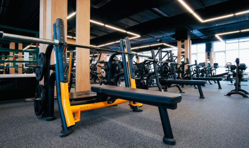

Перетяжка тренажеров

от 700 рублей за 1 элемент тренажера
Замена старой искусственной кожи элементов тренажёра на новую наша работа и имеет недорогое решение - перетяжка тренажеров.
- Перетяжка спинки от {{ 1600 | currency : "₽ " }}
- Перетяжка сиденья от {{ 1300 | currency : "₽ " }}
- Перетяжка лежака от {{ 1900 | currency : "₽ " }}
- Перетяжка подголовника от {{ 1000 | currency : "₽ " }}
Ремонт тренажеров

от 500 рублей за 1 элемент тренажера
Наш специалист осуществит диагностику и необходимый ремонт. Мастер оценит возможные виды ремонта дорожки. В большинстве случаев ремонт осуществляется на месте, но иногда ремонт на месте не возможен, в этом случае наши специалисты демонтируют сломанную деталь для ремонта в мастерской.
- Наполнитель подушки тренажера от {{ 500 | currency : "₽ " }}
- Изготовление основы детали от {{ 500 | currency : "₽ " }}
- Ремонт шва от {{ 500 | currency : "₽ " }}